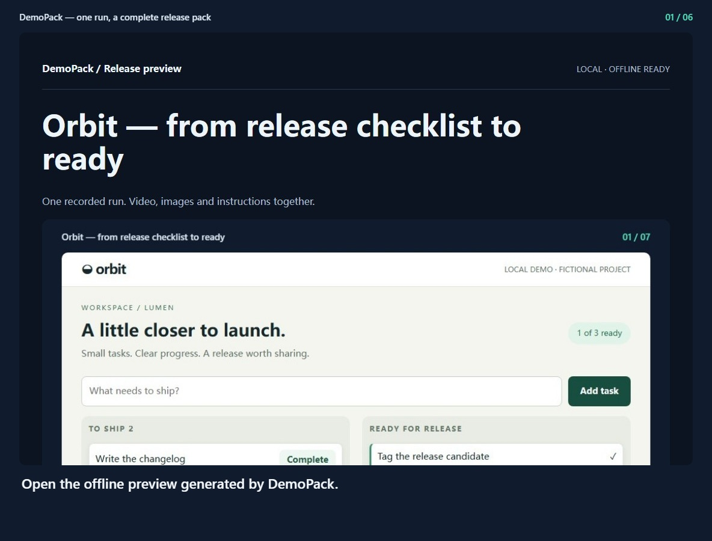
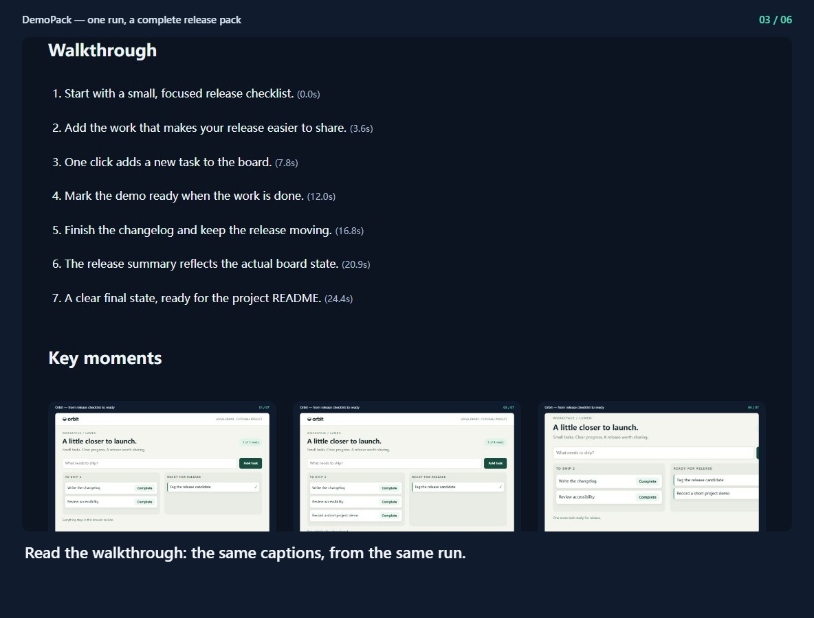
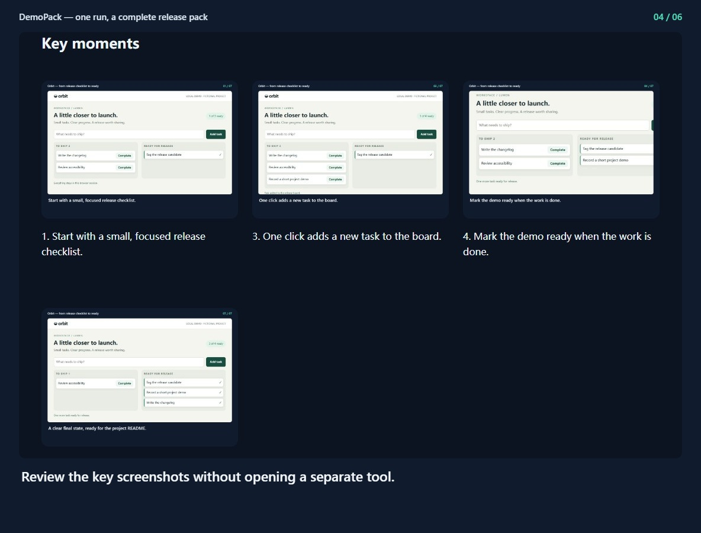
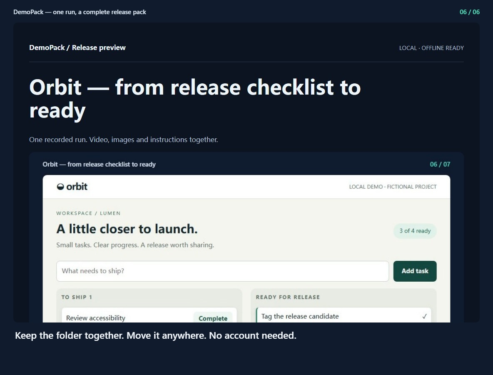

DemoPack / Release previewLOCAL · OFFLINE READYDemoPack — one run, a complete release pack
One recorded run. Video, images and instructions together.
Walkthrough
- Open the offline preview generated by DemoPack. (0.0s)
- Play the real browser recording inside the material pack. (4.1s)
- Read the walkthrough: the same captions, from the same run. (9.5s)
- Review the key screenshots without opening a separate tool. (14.2s)
- Download relative-path Markdown for your project README. (19.0s)
- Keep the folder together. Move it anywhere. No account needed. (23.7s)
Key moments

1. Open the offline preview generated by DemoPack.
3. Read the walkthrough: the same captions, from the same run.
4. Review the key screenshots without opening a separate tool.
6. Keep the folder together. Move it anywhere. No account needed.